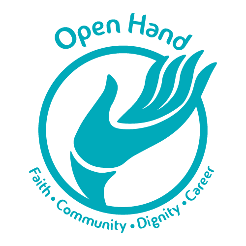

Open Hand of Fredericksburg
- Faith
- Community
- Dignity
- Career
A faith-based 501(c)(3) organization that develops partnerships with at-risk youth ages 14 to 19, their families and the community by providing needed resources to build skills and confidence which can lead to a worthwhile life.

Gaining Respect and Determination for My Life's Purpose
GRAD offers paid summer employment, mentoring, workshops, job preparation, life skills, character formation, and leadership development.
Workshops
Interns attend five days of training workshops on life and job readiness skills from speakers in the community.
Mentors
Each intern is paired with a mentor, who meets with them once a week during the internship.
Paid internship
Interns are placed with a local business partner for a six-week paid internship.
Giving back
Each intern volunteers at least six hours with a nonprofit of their choice.
GRAD in 2023
Each intern received glowing reviews from the community partners they worked for, and several were hired to continue their employment.
An open hand can give and receive.
We serve people in the greater Fredericksburg area through vocational training, job placement, educational services, and mentoring to help fulfill God's purpose in the lives of individuals, families, and communities.
The Open Hand name comes from Deuteronomy 15:11. It symbolizes compassion, generosity, partnership, friendship, service, community, and ready to work.
Our storyOpen Hand gives an opportunity for youth to excel, and make some mistakes, in a job situation with the support of mentors and without the normal pressures of a regular job.Sarah Perry, Downtown Greens
Thank you to the organizations that hosted 2023 GRAD interns
- Stafford Junction
- Stafford County Public School Graphic Imaging Program
- Loisann's Hope House
- Central Virginia Family Medicine
- Ron Rosner YMCA
- City of Fredericksburg Parks and Recreation
- New Hope Christian Ministries
- Youth of Promise
- Sweet Frog
- Lloyd Moss Free Clinic
- Greater Fredericksburg Habitat for Humanity
- Fredericksburg Regional Food Bank
- Gali's Café
- Fredericksburg Office of Voter Registration and Elections
- Fredericksburg Circuit Court
Join the support team
Become a mentor, sponsor a youth, become an employer, a prayer partner, a volunteer or a donor.